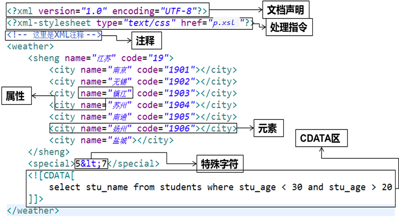

原文连接:https://www.cnblogs.com/Open-ing/p/12061720.html
XML
-
-
XML 的设计宗旨是传输数据，而非显示数据。
-
XML的使命，就是以一个统一的格式，组织有关系的数据。为不同平台下的应用程序服务，独立于软件和硬件的信息传输工具。
-
XML相较于HTML，语法更加严格。

文档声明
-
version属性指定XML版本，固定值是1.0。
-
必须在文件的第一行书写文档声明。
-
-
encoding指定的字符集，是告诉解析器使用什么字符集进行解码，而编码是由文本编辑器决定的
-
通常的写法：<?xml version="1.0" encoding="utf-8" ?>
-
这样就要求保存文件时，必须用utf-8编码保存。此时要求XML文档的作者确认当前编辑器保存文档的编码方式。
语法规则
① XML声明要么不写，要写就写在第一行，并且前面没有任何其他字符,并且必须严格遵循语法
② 只能有一个根标签，所有的其他标签都必须声明在根标签内部
③ 标签必须正确结束，不能交叉嵌套
⑤ 严格区分大小写
⑥ 开始标签中，可以自定义添加属性。但，如果有属性就必须有值，且必须加引号
⑦ 标签不能以数字开头
⑧ 注释不能嵌套, 注释采用：
⑨ XML中可以使用HTML中的转义字符
XML实体中不允许出现"&","<",">"等特殊字符,否则XML语法检查时将出错,请使用转义字符
CDATA区
-
当XML文档中需要写一些程序代码、SQL语句或其他不希望XML解析器进行解析的内容时，就可以写在CDATA区中
-
XML解析器会将CDATA区中的内容原封不动的输出
-
CDATA区的定义格式：<![CDATA[…]]>

① 处理指令，简称PI （processing instruction）。处理指令用来指挥解析引擎如何解析XML文档内容。
② 处理指令必须以 <? 作为开头，以 ?> 作为结尾，XML声明语句就是最常见的一种处理指令。
例如，在XML文档中可以使用xml-stylesheet指令，通知XML解析引擎，应用xsl文件显示xml文档内容。
③ XSL对于XML来说就相当于CSS对HTML一样，XSL是XML的文件样式。
XSL 指扩展样式表语言（EXtensible Stylesheet Language）。

-
-
Dom4j是由早期开发JDOM的人分离出来而后独立开发的。与JDOM不同的是，dom4j使用接口和抽象基类，虽然Dom4j的API相对要复杂一些，但它提供了比JDOM更好的灵活性。
-
dom4j是一个非常优秀的Java XML API，具有性能优异、功能强大和极易使用的特点。现在很多软件都采用dom4j，例如Hibernate。
-
使用dom4j开发，需导入dom4j相应的jar包dom4j-1.6.1.jar。所以使用第一步：导包！
-
//1、创建解析器对象
SAXReader reader = new SAXReader();
//2、使用解析器将xml文件转换为内存中的document对象
Document document = reader.read("teachers.xml"); //相对在项目根路径下查找xml文件
//3、通过文档对象可以获取文档的根标签
Element rootElement = document.getRootElement();
//4、根据根标签获取所有的根标签的子标签集合
List<Element> elements = rootElement.elements();
//5、遍历集合中的标签，并将所有的数据解析出来
for (Element element : elements) {
//每次遍历就代表一个teacher信息
System.out.println("正在遍历的标签名："+element.getName());
System.out.println("正在遍历标签的id属性值："+element.attributeValue("id"));
//获取teacher的子标签的内容
String tname = element.elementText("tname");
System.out.println("tname："+tname);
String age = element.elementText("tage");
System.out.println("tage:"+age);
}修改
//添加一个新的student节点
Element newEle = rootElement.addElement("teacher");
//创建一个良好的xml格式
OutputFormat format = OutputFormat.createPrettyPrint();
//写入文件
XMLWriter xmlWriter = new XMLWriter(new FileWriter("teachers.xml"),format);
xmlWriter.write(document);
xmlWriter.close();新建
//1.创建文档
Document document = DocumentHelper.createDocument();
//2.添加根元素
Element root = document.addElement("teachers");
//3.添加元素节点
Element tcEle = root.addElement("teacher");
Element tcEle2 = root.addElement("teacher");-
-
XPath通过元素和属性进行查找，
| 说明 | |
|---|---|
| /AAA | 选择根元素AAA |
| /AAA/CCC | 选择AAA下的所有CCC子元素 |
| /AAA/DDD/BBB | 选择AAA的子元素DDD的所有BBB子元素 |
| //BBB | 选择所有BBB元素 |
| //DDD/BBB | 选择所有父元素是DDD的BBB元素 |
| /AAA/CCC/DDD/* | 选择所有路径依附于/AAA/CCC/DDD的元素 |
| /*/*/*/BBB | 选择所有的有3个祖先元素的BBB元素 |
| //* | 选择所有元素 |
| /AAA/BBB[1] | 选择AAA的第一个BBB子元素 |
| /AAA/BBB[last()] | 选择AAA的最后一个BBB子元素 |
| //@id | 选择所有元素的id属性 |
| //BBB[@id] | 选择有id属性的BBB元素 |
| //BBB[@name] | 选择有name属性的BBB元素 |
| //BBB[@*] | 选择有任意属性的BBB元素 |
| //BBB[not(@*)] | 选择没有属性的BBB元素 |
| //BBB[@id='b1'] | 选择含有属性id且其值为'b1'的BBB元素 |
| //BBB[@name='bbb'] |
使用
① 导包：jaxen-1.1-beta-6.jar
③ 获取所有符合条件的节点
-
document.selectNodes(String xpathExpression) ：返回List集合
-
举例：document.selectNodes("/students/student")
-
-
document.selectSingleNode(String xpathExpression) ：获取符合条件的单个节点。即一个Node对象。如果符合条件的节点有多个，那么返回第一个。
-
举例：document.selectSingleNode("/students/student[@id='1']")
-
-
-
安装版：需要安装，一般不考虑使用。
-
解压版: 直接解压缩使用，我们使用的版本。
-

-
-
conf：这是一个非常非常重要的目录，这个目录下有四个最为重要的文件：
-
server.xml：配置整个服务器信息。例如修改端口号。默认HTTP请求的端口号是：8080
-
tomcat-users.xml：存储tomcat用户的文件，这里保存的是tomcat的用户名及密码，以及用户的角色信息。可以按着该文件中的注释信息添加tomcat用户，然后就可以在Tomcat主页中进入Tomcat Manager页面了；
-
web.xml：部署描述符文件，这个文件中注册了很多MIME类型，即文档类型。这些MIME类型是客户端与服务器之间说明文档类型的，如用户请求一个html网页，那么服务器还会告诉客户端浏览器响应的文档是text/html类型的，这就是一个MIME类型。客户端浏览器通过这个MIME类型就知道如何处理它了。当然是在浏览器中显示这个html文件了。但如果服务器响应的是一个exe文件，那么浏览器就不可能显示它，而是应该弹出下载窗口才对。MIME就是用来说明文档的内容是什么类型的！
-
context.xml：对所有应用的统一配置，通常我们不会去配置它。
-
-
lib：Tomcat的类库，里面是一大堆jar文件。
-
logs：这个目录中都是日志文件，记录了Tomcat启动和关闭的信息，如果启动Tomcat时有错误，那么异常也会记录在日志文件中。
-
temp：存放Tomcat的临时文件，这个目录下的东西可以在停止Tomcat后删除！
-
webapps：存放web项目的目录，其中每个文件夹都是一个项目；如果这个目录下已经存在了目录，那么都是tomcat自带的项目。其中ROOT是一个特殊的默认项目
-
work：运行时生成的文件，最终运行的文件都在这里。通过webapps中的项目生成的，可以把这个目录下的内容删除，再次运行时会生再次生成work目录。当客户端用户访问一个JSP文件时，Tomcat会通过JSP生成Java文件，然后再编译Java文件生成class文件，生成的java和class文件都会存放到这个目录下。
-
LICENSE：许可证。
-
在命令行中运行catalina run或者 Tomcat解压目录下双击startup.bathttp://localhost:8080
情况一：如果双击startup.bat后窗口一闪而过，请查看JAVA_HOME是否配置正确。
startup.bat会调用catalina.bat，而catalina.bat会调用setclasspath.bat，setclasspath.bat会使用JAVA_HOME环境变量，所以我们必须在启动Tomcat之前把JAVA_HOME配置正确。
情况二：如果启动失败，提示端口号被占用，则将默认的8080端口修改为其他未使用的值，例如8989等。
打开：解压目录\conf\server.xml，找到第一个Connector标签，修改port属性
web服务器在启动时，实际上是监听了本机上的一个端口，当有客户端向该端口发送请求时，web服务器就会处理请求。但是如果不是向其所监听的端口发送请求，web服务器不会做任何响应。例如：Tomcat启动监听了8989端口，而访问的地址是http://localhost:8080


-
-
Libraries：存放的是Tomcat及JRE中的jar包。
-
build：自动编译.java文件的目录。
-
WebContent：存放的是需要部署到服务器的文件
-
META-INF：是存放工程自身相关的一些信息，元文件信息，通常由开发工具和环境自动生成。
-
MANIFEST.MF：配置清单文件
-
-
WEB-INF：这个目录下的文件，是不能被客户端直接访问的。
-
lib：用于存放该工程用到的库。粘贴过来以后，不再需要build path
-
web.xml：web工程的配置文件，完成用户请求的逻辑名称到真正的servlet类的映射。
-
classes：存放Java字节码文件的目录。
-
-


-
-
实际上，Eclipse在使用Tomcat时，并没有将项目部署到Tomcat的目录下，而是在其工作空间中，创建了一个Tomcat的镜像，Eclipse启动的Tomcat是他自己配置的镜像。
-
Eclipse镜像所在目录：你的工作空间目录.metadata.plugins\org.eclipse.wst.server.core\tmp0


总结：启动服务器以后，我们的web项目会部署到服务器目录的wtpwebapps文件夹的目录下。index.jsp也是直接声明在此项目目录下的。
HTTP
-
-
HTTP就是一个通信规则，这个规则规定了客户端发送给服务器的报文格式，也规定了服务器发送给客户端的报文格式。实际我们要学习的就是这两种报文。客户端发送给服务器的称为”请求报文“，服务器发送给客户端的称为”响应报文
浏览器与服务器之间的通信过程要经历四个步骤


Host: localhost:8080 主机虚拟地址
Connection: keep-alive 长连接
Upgrade-Insecure-Requests: 1 请求协议的自动升级[http的请求，服务器却是https的，浏览器自动会将请求协议升级为https的]
User-Agent: Mozilla/5.0 (Windows NT 6.1; WOW64) AppleWebKit/537.36 (KHTML, like Gecko) Chrome/68.0.3440.75 Safari/537.36
- 用户系统信息
Accept:text/html,application/xhtml+xml,application/xml;q=0.9,image/webp,image/apng,*/*;q=0.8
- 浏览器支持的文件类型
Referer: http://localhost:8080/05_web_tomcat/login.html
- 当前页面的上一个页面的路径[当前页面通过哪个页面跳转过来的]： 可以通过此路径跳转回上一个页面， 广告计费，防止盗链
Accept-Encoding: gzip, deflate, br
- 浏览器支持的压缩格式
Accept-Language: zh-CN,zh;q=0.9,en-US;q=0.8,en;q=0.7
- 浏览器支持的语言POST请求要求将form标签的method的属性设置为post
报文格式(4部分)
-
响应首行（响应行）；
-
响应头信息（响应头）；
-
空行；
-
-
-
404：
- 304 （未修改） 自从上次请求后，请求的网页未修改过。服务器返回此响应时，不会返回网页内容。
- 405 （方法禁用） 禁用请求中指定的方法。
HTTP内容类型：当前响应体的数据类型。
① 需要指出的是在浏览器和服务器之间传输的数据类型并非都是文本类型，还包括图片、视频、音频等多媒体类型。这些多媒体类型是使用MIME类型定义的。
| MIME类型 | |
|---|---|
| 超文本标记语言文本 | .html,.htm text/html |
| 普通文本 | .txt text/plain |
| RTF文本 | .rtf application/rtf |
| GIF图形 | .gif image/gif |
| JPEG图形 | .jpeg,.jpg image/jpeg |
| au声音文件 | .au audio/basic |
| MIDI音乐文件 | mid,.midi audio/midi,audio/x-midi |
| RealAudio音乐文件 | .ra, .ram audio/x-pn-realaudio |
| MPEG文件 | .mpg,.mpeg video/mpeg |
| AVI文件 | .avi video/x-msvideo |
| GZIP文件 | .gz application/x-gzip |
| TAR文件 |
1xx（临时响应）
表示临时响应并需要请求者继续执行操作的状态代码。
代码 说明
100 （继续） 请求者应当继续提出请求。服务器返回此代码表示已收到请求的第一部分，正在等待其余部分。
101 （切换协议） 请求者已要求服务器切换协议，服务器已确认并准备切换。
2xx （成功）
表示成功处理了请求的状态代码。
代码 说明
200 （成功） 服务器已成功处理了请求。通常，这表示服务器提供了请求的网页。
201 （已创建） 请求成功并且服务器创建了新的资源。
202 （已接受） 服务器已接受请求，但尚未处理。
203 （非授权信息） 服务器已成功处理了请求，但返回的信息可能来自另一来源。
204 （无内容） 服务器成功处理了请求，但没有返回任何内容。
205 （重置内容） 服务器成功处理了请求，但没有返回任何内容。
206 （部分内容） 服务器成功处理了部分 GET 请求。
3xx （重定向）
表示要完成请求，需要进一步操作。 通常，这些状态代码用来重定向。
代码 说明
300 （多种选择） 针对请求，服务器可执行多种操作。服务器可根据请求者 (user agent) 选择一项操作，或提供操作列表供请求者选择。
301 （永久移动） 请求的网页已永久移动到新位置。服务器返回此响应（对 GET 或 HEAD 请求的响应）时，会自动将请求者转到新位置。
302 （临时移动） 服务器目前从不同位置的网页响应请求，但请求者应继续使用原有位置来进行以后的请求。
303 （查看其他位置） 请求者应当对不同的位置使用单独的 GET 请求来检索响应时，服务器返回此代码。
304 （未修改） 自从上次请求后，请求的网页未修改过。服务器返回此响应时，不会返回网页内容。
305 （使用代理） 请求者只能使用代理访问请求的网页。如果服务器返回此响应，还表示请求者应使用代理。
307 （临时重定向） 服务器目前从不同位置的网页响应请求，但请求者应继续使用原有位置来进行以后的请求。
4xx（请求错误）
这些状态代码表示请求可能出错，妨碍了服务器的处理。
代码 说明
400 （错误请求） 服务器不理解请求的语法。
401 （未授权） 请求要求身份验证。 对于需要登录的网页，服务器可能返回此响应。
403 （禁止） 服务器拒绝请求。
404 （未找到） 服务器找不到请求的网页。
405 （方法禁用） 禁用请求中指定的方法。
406 （不接受） 无法使用请求的内容特性响应请求的网页。
407 （需要代理授权） 此状态代码与 401（未授权）类似，但指定请求者应当授权使用代理。
408 （请求超时） 服务器等候请求时发生超时。
409 （冲突） 服务器在完成请求时发生冲突。服务器必须在响应中包含有关冲突的信息。
410 （已删除） 如果请求的资源已永久删除，服务器就会返回此响应。
411 （需要有效长度） 服务器不接受不含有效内容长度标头字段的请求。
412 （未满足前提条件） 服务器未满足请求者在请求中设置的其中一个前提条件。
413 （请求实体过大） 服务器无法处理请求，因为请求实体过大，超出服务器的处理能力。
414 （请求的 URI 过长） 请求的 URI（通常为网址）过长，服务器无法处理。
415 （不支持的媒体类型） 请求的格式不受请求页面的支持。
416 （请求范围不符合要求） 如果页面无法提供请求的范围，则服务器会返回此状态代码。
417 （未满足期望值） 服务器未满足”期望”请求标头字段的要求。
5xx（服务器错误）
这些状态代码表示服务器在尝试处理请求时发生内部错误。 这些错误可能是服务器本身的错误，而不是请求出错。
代码 说明
500 （服务器内部错误） 服务器遇到错误，无法完成请求。
501 （尚未实施） 服务器不具备完成请求的功能。例如，服务器无法识别请求方法时可能会返回此代码。
502 （错误网关） 服务器作为网关或代理，从上游服务器收到无效响应。
503 （服务不可用） 服务器目前无法使用（由于超载或停机维护）。通常，这只是暂时状态。
504 （网关超时） 服务器作为网关或代理，但是没有及时从上游服务器收到请求。
505 （HTTP 版本不受支持） 服务器不支持请求中所用的 HTTP 协议版本。
HttpWatch状态码Result is
200 - 服务器成功返回网页，客户端请求已成功。
302 - 对象临时移动。服务器目前从不同位置的网页响应请求，但请求者应继续使用原有位置来进行以后的请求。
304 - 属于重定向。自上次请求后，请求的网页未修改过。服务器返回此响应时，不会返回网页内容。
401 - 未授权。请求要求身份验证。 对于需要登录的网页，服务器可能返回此响应。
404 - 未找到。服务器找不到请求的网页。
2xx - 成功。表示服务器成功地接受了客户端请求。
3xx - 重定向。表示要完成请求，需要进一步操作。客户端浏览器必须采取更多操作来实现请求。例如，浏览器可能不得不请求服务器上的不同的页面，或通过代理服务器重复该请求。
4xx - 请求错误。这些状态代码表示请求可能出错，妨碍了服务器的处理。
5xx - 服务器错误。表示服务器在尝试处理请求时发生内部错误。 这些错误可能是服务器本身的错误，而不是请求出错。